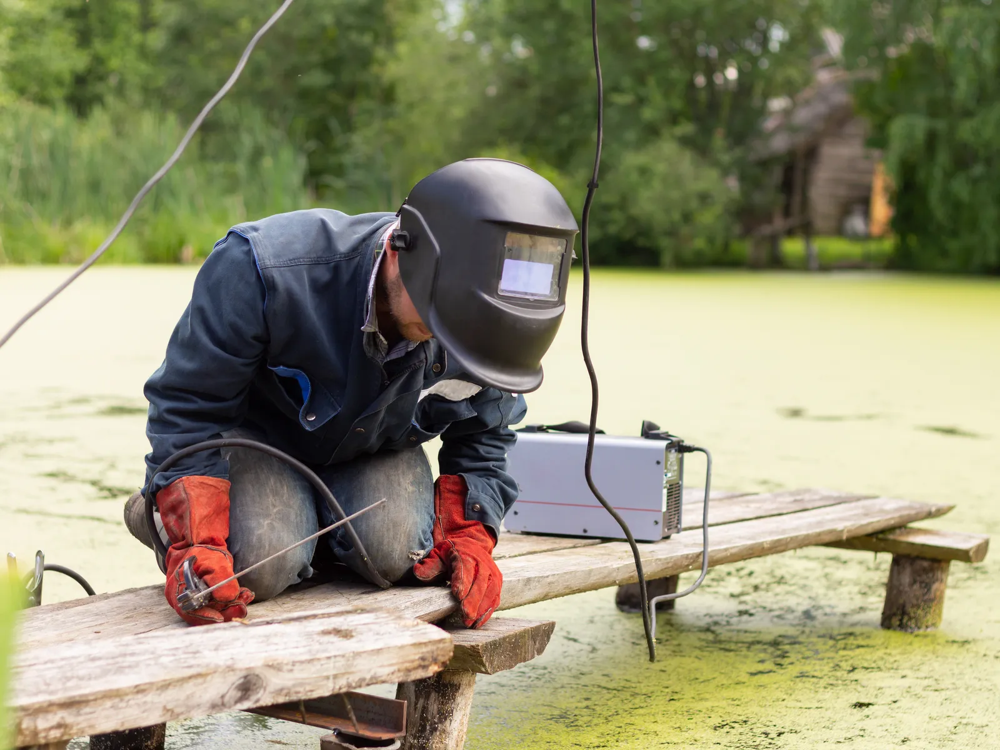

Home · Service Areas · Mandeville
Mandeville Mobile Welders
At Big Easy Mobile Welders, we repair and build metalwork across Mandeville, from gates, fences and railings to custom pieces in steel, aluminum and stainless. Our highly trained welders arrive in a fully equipped mobile unit, so the repair happens where the metal is installed.

We come to the jobWhat Comes With Our Mobile Welding Service in Mandeville?
Mobile welding service in Mandeville comes with a free estimate and no obligation, an experienced welder working from a fully equipped mobile unit, surface prep that strips corrosion before welding, and a final review of the repair, backed by a satisfaction guarantee and follow-up support.
Free Quote, No Strings
You get a free estimate with no obligation, and the price we quote carries no hidden fees.
Experienced Hands
More than 20 years of experience stand behind our licensed, insured and highly trained welders.
On-Site Equipment
Our fully equipped mobile units bring the welding gear to your yard, porch or storefront.
Surface Prep
Grinders and wire brushes strip corrosion and coatings from the joint so the weld starts on bare metal.
Residential or Commercial
Homes, shops and offices get the same service, whether the job is a single repair or a custom fabrication.
Guaranteed Satisfaction
Before we pack up, you inspect the weld with us, and the job is covered by our satisfaction guarantee and follow-up support.

What Brings Mandeville Owners to a Mobile Welder?
Mandeville owners call a mobile welder when lakefront weather and age catch up with their metalwork. Common calls include gates that drift out of line, rusted railing posts on raised porches, storm-bent fence sections and steel stairs or brackets that work loose, along with custom pieces for homes and businesses.
- Rusted Gate Hinges
- Gate Out of Alignment
- Shaky Raised-Porch Stair Railing
- Corroded Railing Base Plates
- Storm-Bent Fence Section
- Broken Balcony Rail Weld
- Loose Steel Bracket
- Custom Railing for a Raised Home
- Cracked Steel Gate Frame
What Kinds of Welding Can Mandeville Property Owners Book?
Mandeville properties can book our full lineup of mobile welding repairs and fabrication: pipe, fence, gate, iron railing, arc and custom welding, plus window frame work, specialized jobs and metal fabrication. Our own welders do each job on site, and each one starts with a free estimate.

Pipe Welding
Pipe and pipeline repair on site, with stick and gas-shielded processes matched to the pipe.
View pipe welding →
Fence Welding
Fence repairs and custom fence fabrication, with the material and process chosen for your fence.
View fence welding →
Gate Welding
Gate repairs and custom gates in steel or aluminum, with materials and tools covered in your estimate.
View gate welding →
Iron Railing Welding
Custom indoor and outdoor railings for stairways, decks and balconies, built to fit your property.
View railing welding →
Arc Welding
Shielded and non-shielded arc welding for commercial and residential customers.
View arc welding →
Custom Welding
Custom ironwork, estimated before we start so we arrive with the right equipment for the job.
View custom welding →
When Does Metal in Mandeville Need a Welder?
Call a welder in Mandeville once metal begins to shift, split or scale with rust. Small faults such as one cracked joint or a loose base plate are usually quicker to repair than the larger failure they can turn into if the metal keeps flexing through wet, stormy weather.
Railings That Flex
A stair or balcony rail that bends when you lean on it may have a broken weld or a rusted anchor at its base.
Scaling Rust
Rust that peels off in layers shows corrosion is working into the steel, not just sitting on the surface.
Gates Out of Square
A gate that no longer meets its latch has usually sagged on the hinge side, where the welds carry the most weight.
How Do Mandeville Homes Change the Welding Work?
Welding work in Mandeville is shaped by houses mostly built from the 1980s onward, historic homes that were raised after Hurricane Katrina, and a lakefront exposed to storm surge. Raised homes mean longer stair runs, taller railings and more exposed support steel to inspect, repair and keep coated.

Mandeville's housing records and lakefront history point to the metalwork we see.
- Built Mostly Since 1980.The Census Bureau's 2020 to 2024 survey dates about 46 percent of Mandeville homes to 1980 through 1999, with 25.1 percent from the 1980s alone.
- Raised After Katrina.The city notes that new FEMA requirements after Hurricane Katrina led to the elevation of historic homes, and raised homes bring their own structural steel repair questions.
- A 1937 Seawall.The lakefront seawall, built under the WPA in 1937, was meant as a first line of defense against storm surge and erosion.
- Detached and Attached Homes.The same survey counts 64.9 percent of housing units as detached houses and 7.2 percent as attached single-family homes such as townhouses.

What Do You Gain From a Local Mobile Welder in Mandeville?
Working with a local mobile welder in Mandeville means the repair comes to the metal instead of the metal going to a shop. Railings, gates and stair steel stay installed while we fix them, and you deal with a locally owned company that stays available for follow-up support after the job.
A Local Business
Our company is locally owned and has worked across New Orleans and its surrounding cities for many years.
Mobile Shop
A fully equipped mobile unit lets us weld at your property instead of asking you to remove and haul the piece.
Qualified Welders
Each job goes to licensed, insured welders with more than two decades of experience.
Straightforward Pricing
We quote for free, keep pricing transparent and offer easy ways to pay.
How Does a Mobile Welding Visit Work in Mandeville?
A Mandeville welding visit has four stages. It begins with your free estimate request, moves to an approved quote and a weekday booking, continues with prep and welding on site, and ends with a walkthrough of the finished work, with follow-up support afterward.
Reach Out
Call (504) 370-2757 or submit the online form, naming the broken piece and where on the property it sits.
Approve and Schedule
When the quote looks right, choose an appointment Monday to Friday between 8 AM and 3 PM.
On-Site Repair
Our welder sets up the mobile unit, cleans the metal, welds the joint and checks the result.
Final Look
You see the finished repair before we leave, and you can reach us afterward with any follow-up questions.
 The rig comes to you
The rig comes to youHow Do You Get a Mandeville Home Ready for a Welder?
Before a welder comes to your Mandeville home, plan how the mobile unit will reach the work, what the damaged piece is made of, and whether a storm or simple age caused the problem. Knowing the cause helps us decide between repairing the original metal and fabricating a replacement section.
Reach and Height
For railings and stairs on a raised home, note how high the work is and how a welder can safely get to it.
Storm or Wear
If a storm bent the metal, our article on welding fixes for storm-bent fences, gates and railings covers what is usually repairable.
Metal Type
Tell us whether the piece is steel, aluminum, stainless or cast iron, or send a photo so we can tell.
How Far Beyond Mandeville Do Our Mobile Welders Travel?
From Mandeville, our mobile welders also cover Covington, Madisonville and Slidell across the Northshore, plus Hammond and Baton Rouge. South of the lake, the same team works in New Orleans, Metairie, Kenner, Gretna, St. Rose and LaPlace, with free estimates and fully equipped mobile units in every city.
- New Orleans
- Metairie
- Kenner
- Gretna
- St. Rose
- LaPlace
- Slidell
- Mandeville
- Covington
- Madisonville
- Hammond
- Baton Rouge
Not sure we cover your street?
Request a free estimate or call us, and we will confirm before we book the job.
Where Our Rigs Roll
Schematic, not to scale. New Orleans and the 11 nearby cities we serve.
About Mandeville
Mandeville is a city on the north shore of Lake Pontchartrain in St. Tammany Parish.
Population
The 2020 Census counted 13,192 residents in Mandeville, up from 11,560 in 2010.
Planned in 1834
Bernard Xavier de Marigny de Mandeville bought the land, and a town plan by Louis Bringier was filed in January 1834, when lot auctions began.
A Summer Retreat
Early buyers built summer homes to escape the heat and disease of New Orleans summers, and several from the 1830s and 1840s still stand on the lakefront.
Things To Do
Free time in Mandeville tends to center on the lakefront, live music and the Tammany Trace.
The Lakefront
The 1834 town plan kept the lakefront public for common use, and the city notes the lake's many water recreation opportunities.
Dew Drop Jazz Hall
The Dew Drop Social and Benevolent hall, established in 1895, is now a city-owned concert venue at 430 Lamarque Street.
Mandeville Trailhead
The Mandeville Trailhead and Cultural Interpretive Center sits beside the Tammany Trace and hosts a Saturday community market.
Nearby Suburbs
Mandeville sits between other Northshore cities that our team also covers.
Covington
Covington, the parish seat, lies to the north on the Bogue Falaya River.
Madisonville
Madisonville, a river town settled by the French in 1773, lies to the west on the Tchefuncte River.
Slidell
Slidell lies to the east, where the Tammany Trace ends after its run from Covington.
Interesting and Fun Facts
Mandeville's history includes lake steamers, a long wait for a bridge and a district that keeps its original plan.
Lake Steamers
The steamer Blackhawk once ran from New Orleans with stops at Madisonville, Lewisburg and Mandeville.
Ferries Gave Way
Ferry and steamer service between New Orleans and Mandeville ended by 1936, and the Causeway's first span opened a direct route to the north shore in 1956.
Old Mandeville
The Old Mandeville Historic District covers the core of Louis Bringier's 1834 town plan.
Public Transportation
Mandeville riders use STAR Transit's call-in service and the parish's park-and-ride lots.
- STAR Transit: curb-to-curb, call-in rides anywhere inside the parish, open to all parish residents.
- Reservations: call 985-327-0185, with trips booked first come, first served.
- Mandeville Park and Ride: a commuter lot at 675 Lafitte Street.
- Koop Drive Park and Ride: a commuter lot at 21490 Koop Drive, the road that holds the official Tammany Trace trailhead.
- Vanpools and transfers: the parish built its nine park-and-ride lots as meeting points for commuters and vanpoolers and as transfer points between transportation providers.
Where Do You Get a Free Welding Quote in Mandeville?
A free welding quote in Mandeville starts with a call to (504) 370-2757 or our online estimate form. Tell us what broke, what it is made of and whether it sits at ground level or up on a raised porch, and we follow up with a transparent price and no obligation.
Loading the estimate form...
If it does not appear, call us at (504) 370-2757.

What Do Mandeville Owners Want to Know About Welding?
Mandeville owners often ask about welding railings on raised houses, straightening a bent railing, aluminum versus steel, heat damage to paint, how far ahead to book, matching an old railing, welding fumes near the house and when Mandeville was founded.
Can you weld a railing on a raised house?
Railings on raised houses can usually be welded in place from the stairs, the porch or a ladder, depending on height and access. The welder shields nearby siding and decking from sparks and checks that the posts are anchored firmly. Badly rusted posts may need replacing before the rail is rewelded.
Can a welder straighten a bent metal railing?
A bent steel or iron railing can often be straightened with heat and controlled force, and any cracked welds are then redone. Cast iron parts and metal that has kinked sharply or rusted thin usually do not straighten well, so they are replaced with a new section. We judge which applies during the estimate.
Is welding aluminum harder than steel?
Welding aluminum is generally harder than welding steel. Aluminum conducts heat quickly, melts at a lower temperature without glowing first, and forms an oxide layer that has to be removed, so it calls for careful prep and process control. Steel is more forgiving and works with more welding processes.
Can welding damage paint or nearby surfaces?
Welding heat can scorch paint, powder coat or vinyl close to the joint, and sparks can mark glass, decking and siding. Welders usually shield nearby surfaces with welding blankets and clear flammable items first. The heated area around a new weld normally needs fresh primer and paint afterward.
How far ahead should I book a welder?
There is no fixed rule, but calling as soon as you notice damage gives you the most scheduling choice. Our visits run Monday to Friday, 8 AM to 3 PM, so plan around that window. Photos sent with your request let us price the job closely and pack the right gear.
Can a welder make a custom railing to match an old one?
A welder can often fabricate new railing sections that closely match an existing design by measuring the old pieces and matching bar sizes, spacing and scrollwork where possible. Exact copies of old cast or hand-forged parts are not always possible, so we talk through the options during the estimate.
Are welding fumes dangerous to people nearby?
Welding fumes can irritate the lungs, so people and pets should stay back from the work area, especially when galvanized or painted metal is involved. Outdoor jobs usually disperse fumes quickly. Keeping nearby windows and doors closed during the work helps keep smoke out of the house.
When was Mandeville founded?
Mandeville dates to the 1830s. Bernard Xavier de Marigny de Mandeville acquired the land, and a town plan by Louis Bringier was filed in January 1834, when town lots began selling at auction. The core of that plan now forms the Old Mandeville Historic District.


Book Your Free Mobile Welding Estimate
Tell us what needs welding, and we will bring the rig to your door anywhere in the New Orleans area.